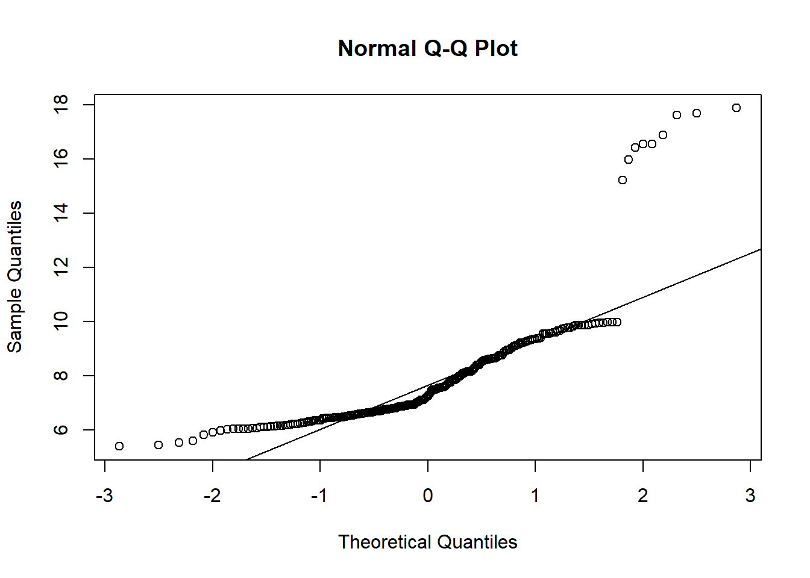
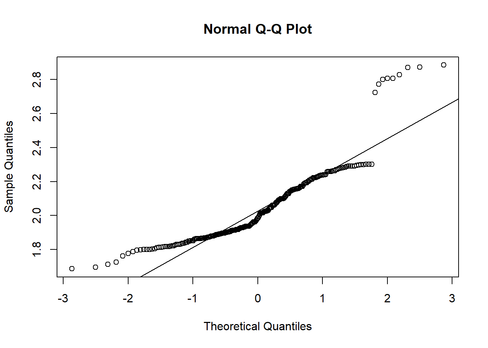
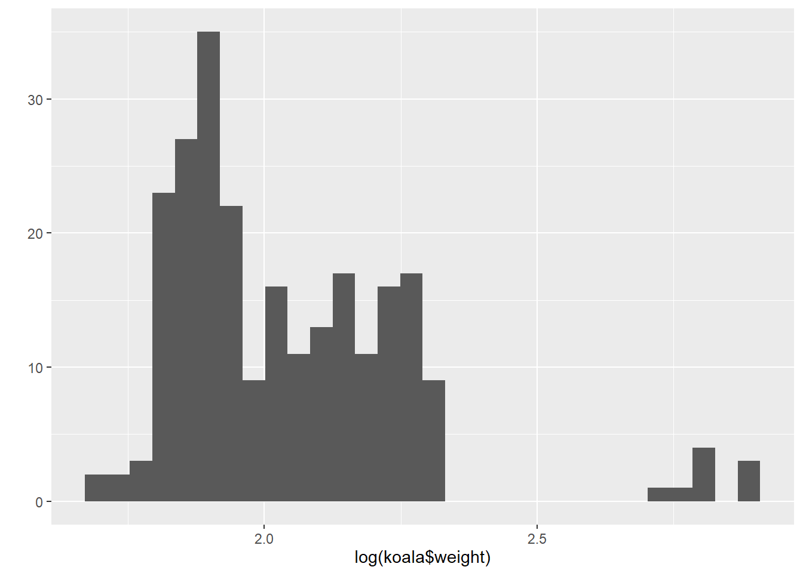
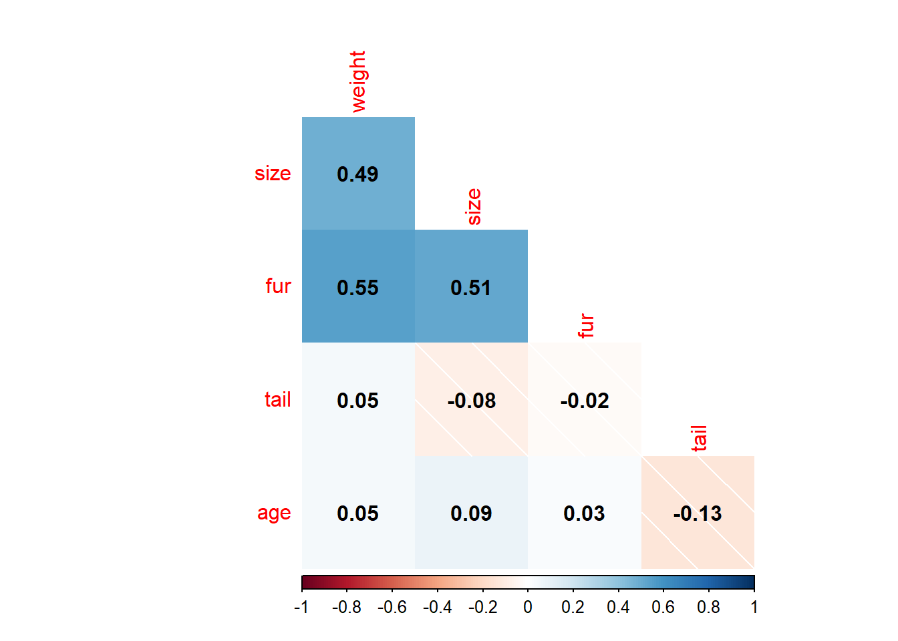
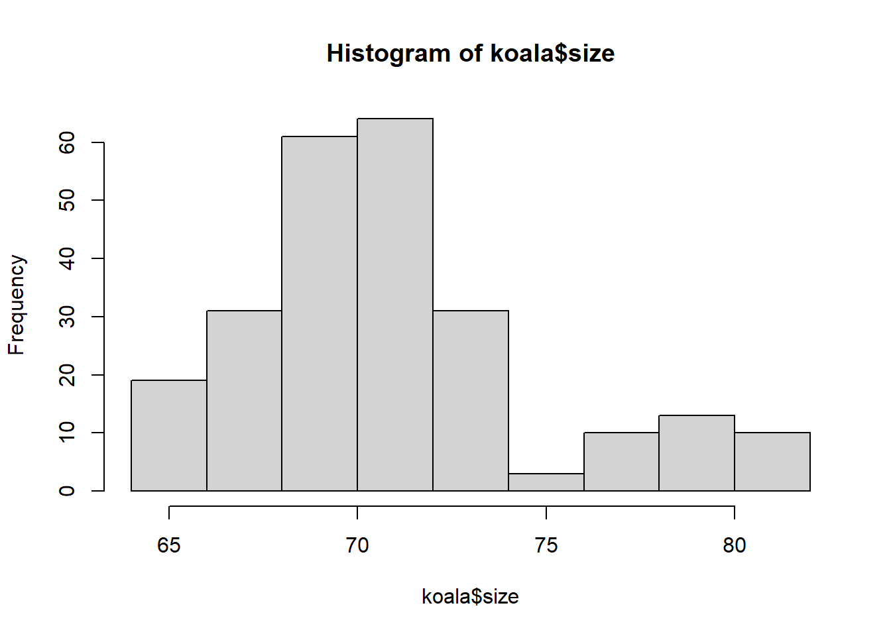
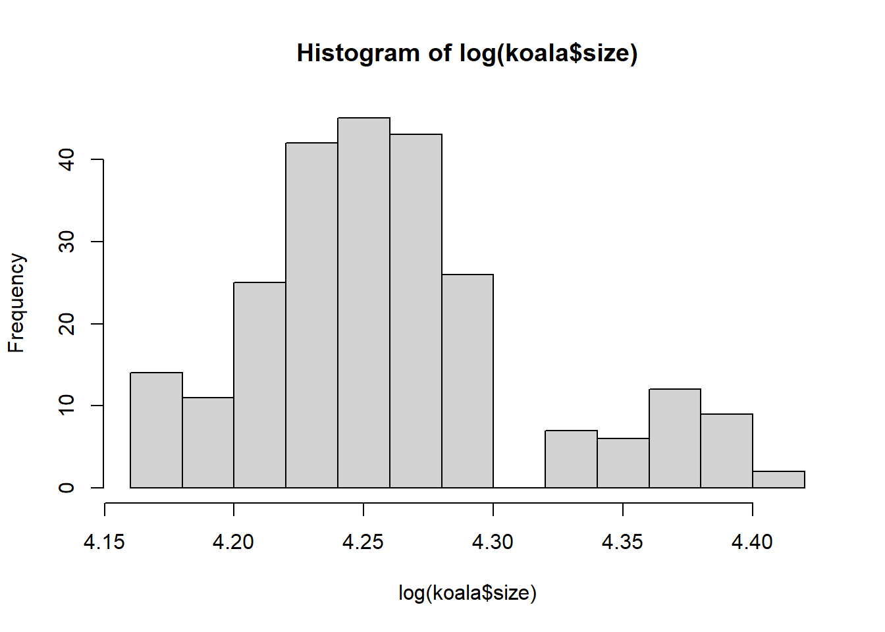
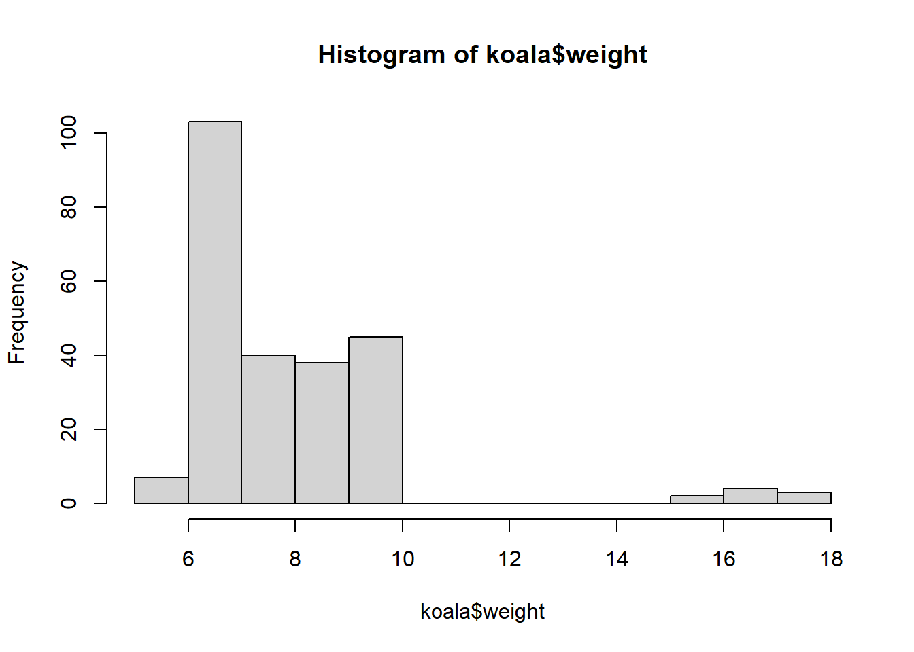
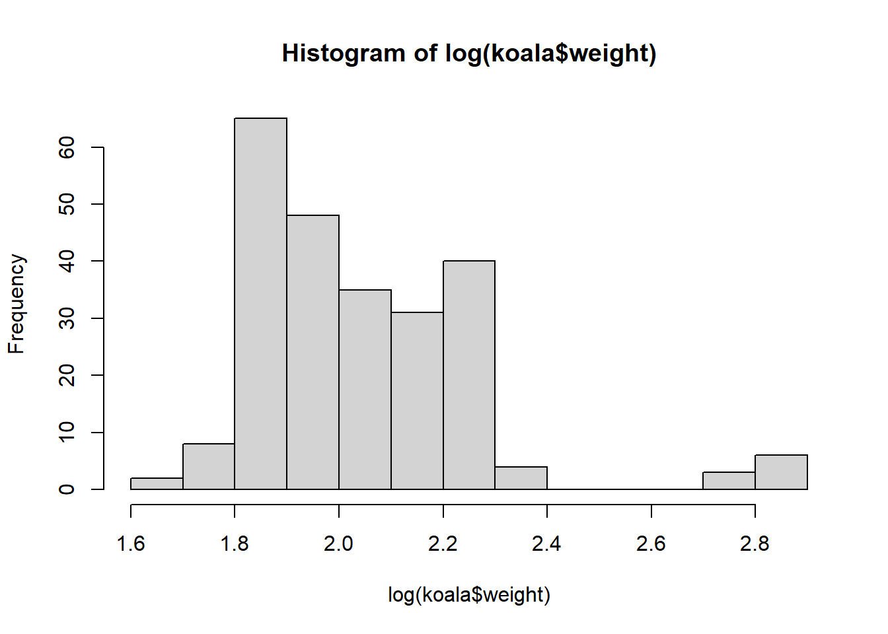
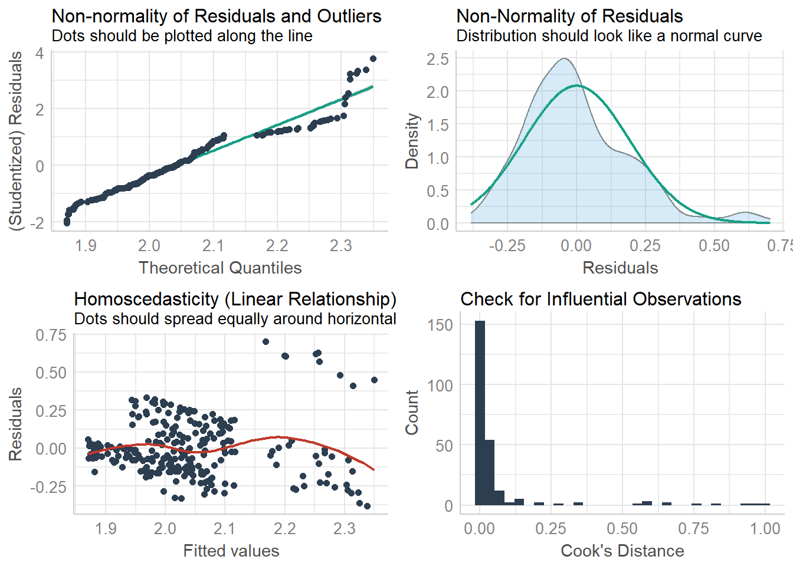
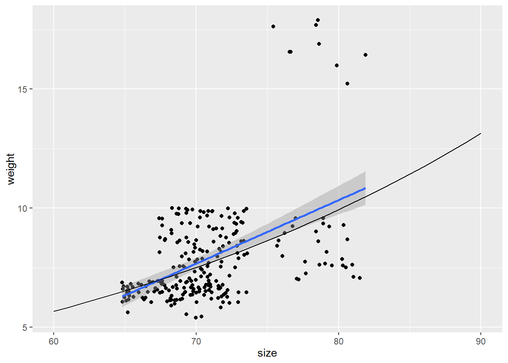

Chapter 6 Introduction to linear models in R
Let’s first load packages and data:
library(performance)
library(corrplot)
library(emojifont)
library(tidyverse)koala<-read.csv(file="data/koala.csv", stringsAsFactors = T)
#have a peek at the data structure
str(koala)## 'data.frame': 242 obs. of 15 variables:
## $ species: Factor w/ 1 level "Phascolarctos cinereus": 1 1 1 1 1 1 1 1 1 1 ...
## $ X : num 153 148 153 153 153 ...
## $ Y : num -27.5 -22.5 -27.5 -27.5 -27.5 ...
## $ state : Factor w/ 4 levels "New South Wales",..: 2 2 2 2 2 2 2 2 2 2 ...
## $ region : Factor w/ 2 levels "northern","southern": 1 1 1 1 1 1 1 1 1 1 ...
## $ sex : Factor w/ 2 levels "female","male": 2 1 2 2 1 2 2 2 1 1 ...
## $ weight : num 7.12 5.45 6.63 6.47 5.62 ...
## $ size : num 70.8 70.4 68.7 73 65.2 ...
## $ fur : num 1.86 1.85 2.48 1.92 1.95 ...
## $ tail : num 1.17 1.56 1.06 1.8 1.63 ...
## $ age : int 8 10 1 1 10 12 9 1 1 1 ...
## $ color : Factor w/ 6 levels "chocolate brown",..: 3 4 6 3 4 4 6 4 3 3 ...
## $ joey : Factor w/ 2 levels "No","Yes": 1 2 1 1 1 1 1 1 1 1 ...
## $ behav : Factor w/ 3 levels "Feeding","Just Chillin",..: 3 3 2 3 3 1 2 3 1 3 ...
## $ obs : Factor w/ 3 levels "Opportunistic",..: 2 1 2 3 3 1 3 2 2 2 ...summary(koala)## species X Y
## Phascolarctos cinereus:242 Min. :138.6 Min. :-39.00
## 1st Qu.:150.0 1st Qu.:-34.49
## Median :152.0 Median :-32.67
## Mean :150.3 Mean :-32.36
## 3rd Qu.:152.9 3rd Qu.:-30.31
## Max. :153.6 Max. :-21.39
## state region sex weight
## New South Wales:181 northern:165 female:127 Min. : 5.406
## Queensland : 16 southern: 77 male :115 1st Qu.: 6.574
## South Australia: 14 Median : 7.277
## Victoria : 31 Mean : 7.923
## 3rd Qu.: 8.765
## Max. :17.889
## size fur tail age
## Min. :64.81 Min. :1.110 Min. :1.004 Min. : 1.00
## 1st Qu.:68.43 1st Qu.:2.410 1st Qu.:1.272 1st Qu.: 3.00
## Median :70.27 Median :2.797 Median :1.534 Median : 7.00
## Mean :70.94 Mean :2.896 Mean :1.507 Mean : 6.43
## 3rd Qu.:72.33 3rd Qu.:3.217 3rd Qu.:1.750 3rd Qu.: 9.00
## Max. :81.91 Max. :5.876 Max. :1.981 Max. :12.00
## color joey behav obs
## chocolate brown:21 No :185 Feeding : 48 Opportunistic:65
## dark grey :36 Yes: 57 Just Chillin: 67 Spotlighting :94
## grey :69 Sleeping :127 Stagwatching :83
## grey-brown :53
## light brown :20
## light grey :43The main object of this session is to show how to perform basic regression analysis, including plots for model checking and display of confidence and prediction intervals.
linear regression model is represented as: \[Y=a+bX\]
X is the explanatory variable and Y is the dependent variable. The slope of the line is b, and a is the intercept (the value of y when x = 0).
\[Y = \sigma + \beta X_1 + \epsilon \]
The parameters \(\alpha\), \(\beta\) , and \(\epsilon\) can be estimated using the method of least squares.
6.1 Model Assumptions
Each of the model assumptions concerns the error term of the regression model. These are:
- Individual observations are independent
- Response data are normally distributed
- Variance is homogeneous across range of predictor
- Data are linear
koala<-read.csv(file="data/koala.csv", stringsAsFactors = T)
qplot(koala$weight)## `stat_bin()` using `bins = 30`. Pick better value with `binwidth`.
qplot(log(koala$weight))## `stat_bin()` using `bins = 30`. Pick better value with `binwidth`.
qqnorm(koala$weight)
qqline(koala$weight)### look at the line for the pattern
### qqplot with log transformed data
qqnorm(log(koala$weight))
qqline(log(koala$weight))
qplot(log(koala$weight))## `stat_bin()` using `bins = 30`. Pick better value with `binwidth`.
qplot(koala$fur)## `stat_bin()` using `bins = 30`. Pick better value with `binwidth`.
6.2 Linear model
The lm function handles much more complicated models than simple linear
regression. There can be many other things besides a dependent and a
descriptive variable in a model formula.
lm<-lm(size~fur, data=koala)
summary(lm)##
## Call:
## lm(formula = size ~ fur, data = koala)
##
## Residuals:
## Min 1Q Median 3Q Max
## -7.1884 -2.3545 -0.2146 1.8404 10.1324
##
## Coefficients:
## Estimate Std. Error t value Pr(>|t|)
## (Intercept) 63.266 0.853 74.168 <2e-16 ***
## fur 2.650 0.285 9.295 <2e-16 ***
## ---
## Signif. codes: 0 '***' 0.001 '**' 0.01 '*' 0.05 '.' 0.1 ' ' 1
##
## Residual standard error: 3.346 on 240 degrees of freedom
## Multiple R-squared: 0.2647, Adjusted R-squared: 0.2616
## F-statistic: 86.4 on 1 and 240 DF, p-value: < 2.2e-16confint(lm)## 2.5 % 97.5 %
## (Intercept) 61.585132 64.945776
## fur 2.088061 3.211097check_model(lm, check=c("qq", "normality", "ncv", "outliers"))## Not enough model terms in the conditional part of the model to check for multicollinearity.## `geom_smooth()` using formula 'y ~ x'
## `geom_smooth()` using formula 'y ~ x'## `stat_bin()` using `bins = 30`. Pick better value with `binwidth`.
6.3 Correlation
A Correlation coefficient is a symmetric, scale-invariant measure of association between two random variables. It ranges from -1 to +1, where the extremes indicate perfect correlation and 0 means no correlation. The sign is negative when large values of one variable are associated with small values of the other and positive if both variables tend to be large or small simultaneously. The reader should be warned that there are many incorrect uses of correlation coefficients, particularly when they are used in regression type settings.
Correlation is a statistical technique that can show whether and how strongly pairs of variables are related.The main result of a correlation is called the correlation coefficient (or “r”). It ranges from -1.0 to +1.0. The closer r is to +1 or -1, the more closely the two variables are related.
corkoala<-koala %>%
select_if(is.numeric)%>%
select(-c(1,2))
corMat<-cor(corkoala, use="complete.obs", method = "pearson")
corrplot(corMat,
method="shade",
type="lower",
diag = FALSE,
addCoef.col = "black")
6.4 Statistical Hypothesis
Determine if two or more samples are from the same population
H0:
-Sample means are all equal(i.e., A= )
-There is no effect of the factor on the response variable
If reject H0
-Suggests that at least one sample mean is different from the others
If don’t reject H0
-No evidence that any of the sample means are different from the overall population mean
6.5 ANOVA
Test for significant differences between the group means can be performed by comparing two variance estimates. This is why the procedure is called analysis of variance even though the objective is to compare the group means.There are multiple ways of representing the effect of a factor variable in linear models (and one-way analysis of variance is the simplest example of a linear model with a factor variable).
summary(koala)## species X Y
## Phascolarctos cinereus:242 Min. :138.6 Min. :-39.00
## 1st Qu.:150.0 1st Qu.:-34.49
## Median :152.0 Median :-32.67
## Mean :150.3 Mean :-32.36
## 3rd Qu.:152.9 3rd Qu.:-30.31
## Max. :153.6 Max. :-21.39
## state region sex weight
## New South Wales:181 northern:165 female:127 Min. : 5.406
## Queensland : 16 southern: 77 male :115 1st Qu.: 6.574
## South Australia: 14 Median : 7.277
## Victoria : 31 Mean : 7.923
## 3rd Qu.: 8.765
## Max. :17.889
## size fur tail age
## Min. :64.81 Min. :1.110 Min. :1.004 Min. : 1.00
## 1st Qu.:68.43 1st Qu.:2.410 1st Qu.:1.272 1st Qu.: 3.00
## Median :70.27 Median :2.797 Median :1.534 Median : 7.00
## Mean :70.94 Mean :2.896 Mean :1.507 Mean : 6.43
## 3rd Qu.:72.33 3rd Qu.:3.217 3rd Qu.:1.750 3rd Qu.: 9.00
## Max. :81.91 Max. :5.876 Max. :1.981 Max. :12.00
## color joey behav obs
## chocolate brown:21 No :185 Feeding : 48 Opportunistic:65
## dark grey :36 Yes: 57 Just Chillin: 67 Spotlighting :94
## grey :69 Sleeping :127 Stagwatching :83
## grey-brown :53
## light brown :20
## light grey :43anova<-aov(weight~sex, koala)
summary(anova)## Df Sum Sq Mean Sq F value Pr(>F)
## sex 1 418.9 418.9 147.4 <2e-16 ***
## Residuals 240 681.9 2.8
## ---
## Signif. codes: 0 '***' 0.001 '**' 0.01 '*' 0.05 '.' 0.1 ' ' 1anova1<-aov(tail~sex, koala)
summary(anova1)## Df Sum Sq Mean Sq F value Pr(>F)
## sex 1 0.01 0.01047 0.133 0.716
## Residuals 240 18.90 0.07876TukeyHSD(anova1)## Tukey multiple comparisons of means
## 95% family-wise confidence level
##
## Fit: aov(formula = tail ~ sex, data = koala)
##
## $sex
## diff lwr upr p adj
## male-female 0.0131722 -0.0579901 0.08433451 0.7157089anova(anova, anova1, test="chi")## Analysis of Variance Table
##
## Response: weight
## Df Sum Sq Mean Sq F value Pr(>F)
## sex 1 418.89 418.89 147.43 < 2.2e-16 ***
## Residuals 240 681.90 2.84
## ---
## Signif. codes: 0 '***' 0.001 '**' 0.01 '*' 0.05 '.' 0.1 ' ' 16.6 Build the model
6.6.1 GLM
Advantages of GLMs over traditional regression
- We do not need to transform the response Y to have a normal distribution
- The choice of link is separate from the choice of random component thus we have more flexibility in modeling
- If the link produces additive effects, then we do not need constant variance.
- The models are fitted via Maximum Likelihood estimation; thus optimal properties of the estimators.
- All the inference tools and model checking that we will discuss for log-linear and logistic regression models apply for other GLMs too; e.g., Wald and Likelihood ratio tests, Deviance, Residuals, Confidence intervals, Overdispersion.
- There is often one procedure in a software package to capture all the models listed above, e.g. PROC GENMOD in SAS or glm() in R, etc… with options to vary the three components.
6.6.2 But there are some limitations of GLMs too, such as,
- Linear function, e.g. can have only a linear predictor in the systematic component
- Responses must be independent
hist(koala$size)
hist(log(koala$size))
hist(koala$weight)
hist(log(koala$weight))
summary(koala$size)## Min. 1st Qu. Median Mean 3rd Qu. Max.
## 64.81 68.43 70.27 70.94 72.33 81.91weight_sizemodel<-glm(log(weight)~size,family=gaussian(link='identity'),data=koala)
summary(weight_sizemodel)##
## Call:
## glm(formula = log(weight) ~ size, family = gaussian(link = "identity"),
## data = koala)
##
## Deviance Residuals:
## Min 1Q Median 3Q Max
## -0.38285 -0.13252 -0.02833 0.09998 0.70169
##
## Coefficients:
## Estimate Std. Error t value Pr(>|t|)
## (Intercept) 0.054962 0.225778 0.243 0.808
## size 0.028017 0.003178 8.816 2.47e-16 ***
## ---
## Signif. codes: 0 '***' 0.001 '**' 0.01 '*' 0.05 '.' 0.1 ' ' 1
##
## (Dispersion parameter for gaussian family taken to be 0.0369023)
##
## Null deviance: 11.7246 on 241 degrees of freedom
## Residual deviance: 8.8566 on 240 degrees of freedom
## AIC: -107.72
##
## Number of Fisher Scoring iterations: 2anova(weight_sizemodel)## Analysis of Deviance Table
##
## Model: gaussian, link: identity
##
## Response: log(weight)
##
## Terms added sequentially (first to last)
##
##
## Df Deviance Resid. Df Resid. Dev
## NULL 241 11.7246
## size 1 2.868 240 8.8566check_model(weight_sizemodel, check=c("qq", "normality", "ncv", "outliers")) ## Not enough model terms in the conditional part of the model to check for multicollinearity.## `geom_smooth()` using formula 'y ~ x'
## `geom_smooth()` using formula 'y ~ x'## `stat_bin()` using `bins = 30`. Pick better value with `binwidth`.
confint(weight_sizemodel)## Waiting for profiling to be done...## 2.5 % 97.5 %
## (Intercept) -0.38755522 0.49747923
## size 0.02178785 0.03424534prediction_matrix <- cbind.data.frame(size = 60:90)
prediction_matrix$lp <- 0.054962 + 0.028017 * prediction_matrix$size
prediction_matrix$mu <- exp(prediction_matrix$lp)
ggplot(data = koala, aes(x = size, y =weight)) + geom_point() + geom_smooth(method="glm")+
geom_line(data = prediction_matrix, aes(size, mu))## `geom_smooth()` using formula 'y ~ x'
😸